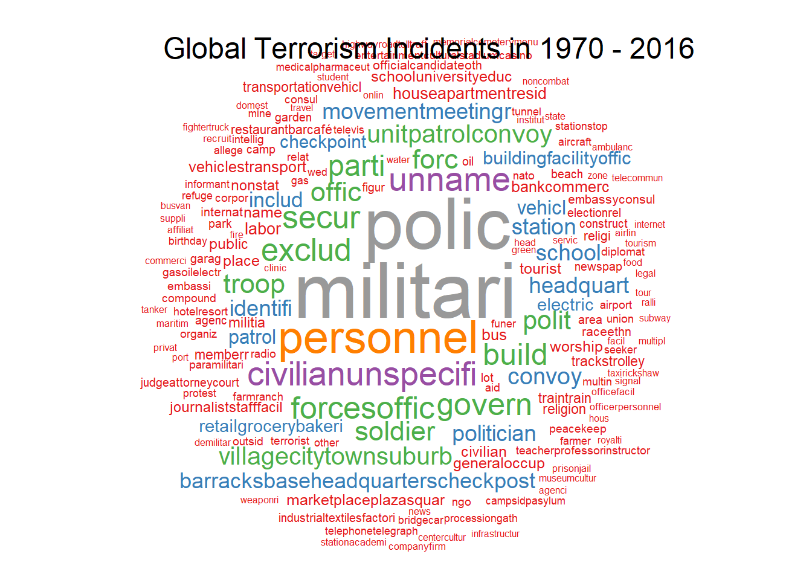
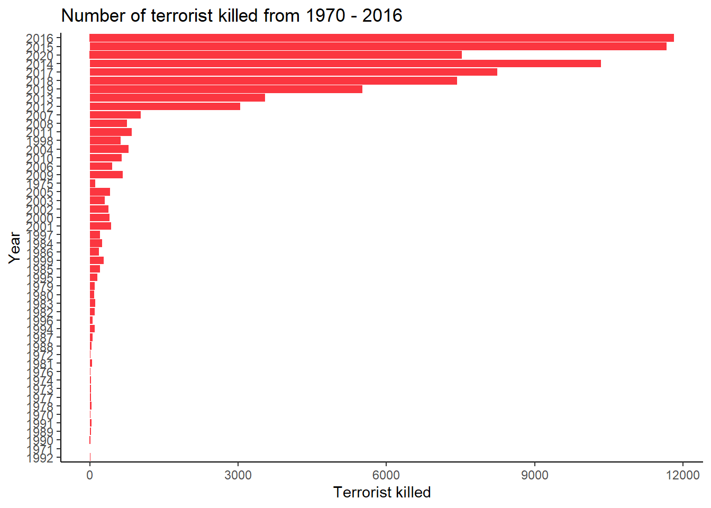
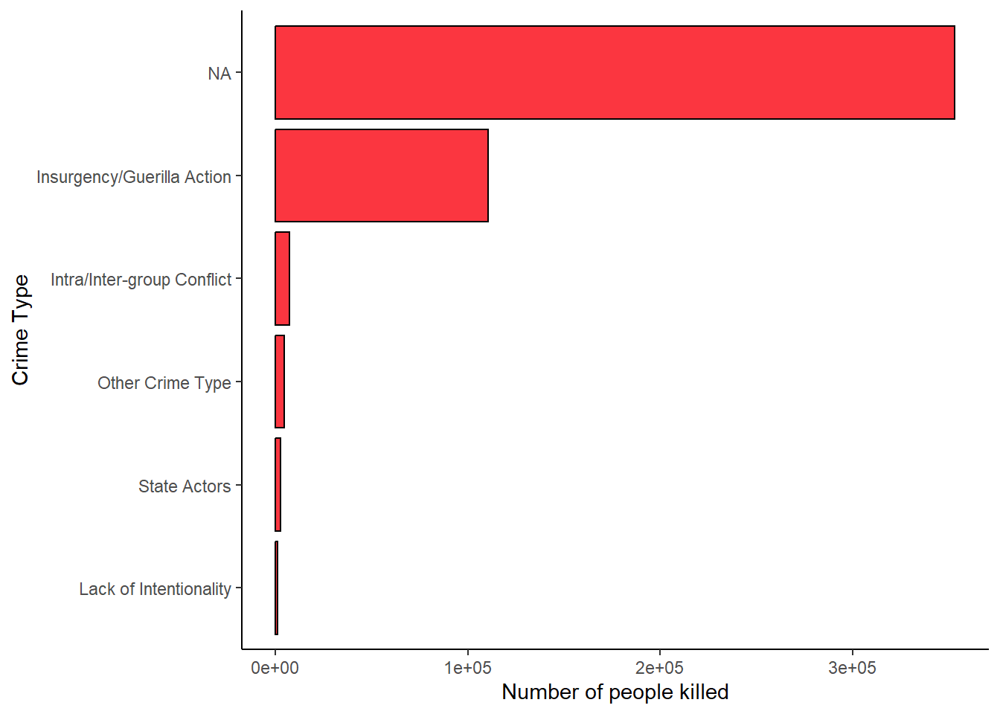
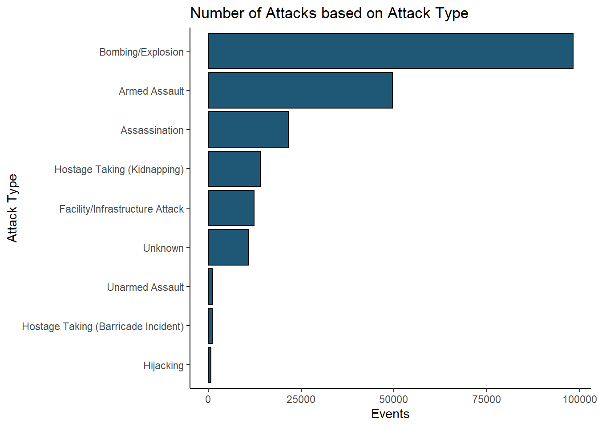
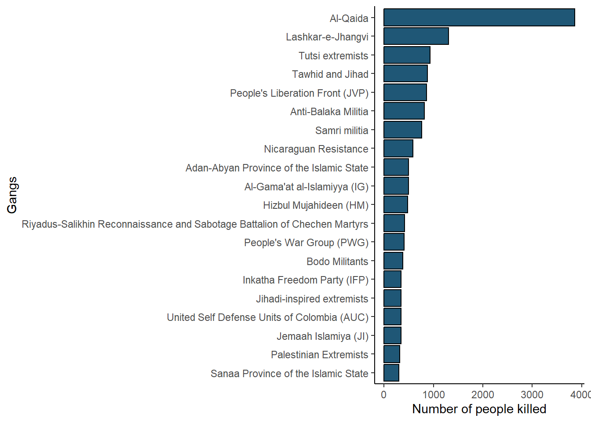
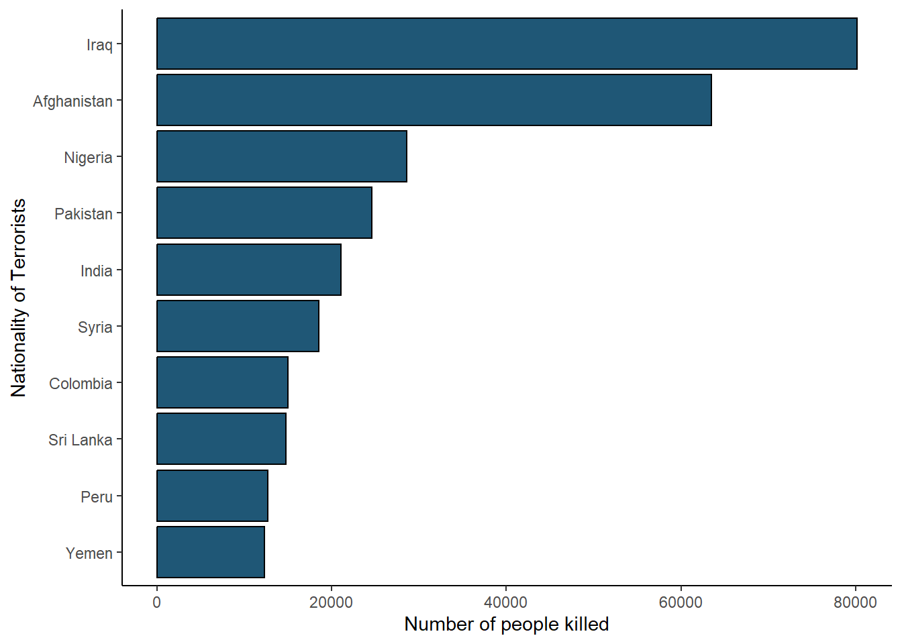
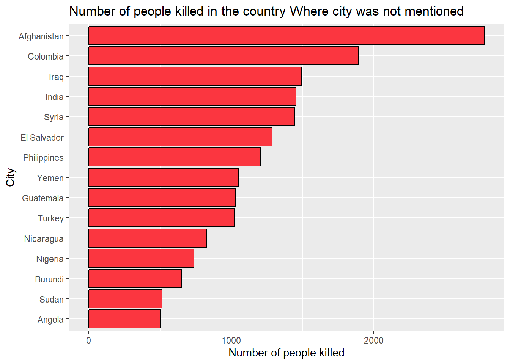

Show code
pacman::p_load(tidyverse, leaflet, treemap, rmarkdown, highcharter, viridis,
ggplot2, tidyr, dplyr, viridisLite, RColorBrewer, countrycode,
wordcloud, tidytext, tm, plotly)February 20, 2024
February 22, 2024
'data.frame': 209706 obs. of 60 variables:
$ eventid : num 1.97e+11 1.97e+11 1.97e+11 1.97e+11 1.97e+11 ...
$ iyear : int 1970 1970 1970 1970 1970 1970 1970 1970 1970 1970 ...
$ imonth : int 7 0 1 1 1 1 1 1 1 1 ...
$ iday : int 2 0 0 0 0 1 2 2 2 3 ...
$ extended : int 0 0 0 0 0 0 0 0 0 0 ...
$ country_txt : chr "Dominican Republic" "Mexico" "Philippines" "Greece" ...
$ region_txt : chr "Central America & Caribbean" "North America" "Southeast Asia" "Western Europe" ...
$ provstate : chr "National" "Federal" "Tarlac" "Attica" ...
$ city : chr "Santo Domingo" "Mexico city" "Unknown" "Athens" ...
$ latitude : num 18.5 19.4 15.5 38 33.6 ...
$ longitude : num -70 -99.1 120.6 23.8 130.4 ...
$ vicinity : int 0 0 0 0 0 0 0 0 0 0 ...
$ summary : chr NA NA NA NA ...
$ crit1 : int 1 1 1 1 1 1 1 1 1 1 ...
$ crit2 : int 1 1 1 1 1 1 1 1 1 1 ...
$ crit3 : int 1 1 1 1 1 1 1 1 1 1 ...
$ doubtterr : int 0 0 0 0 -9 0 0 1 0 0 ...
$ alternative_txt : chr NA NA NA NA ...
$ multiple : int 0 0 0 0 0 0 0 0 0 0 ...
$ success : int 1 1 1 1 1 1 0 1 1 1 ...
$ suicide : int 0 0 0 0 0 0 0 0 0 0 ...
$ attacktype1_txt : chr "Assassination" "Hostage Taking (Kidnapping)" "Assassination" "Bombing/Explosion" ...
$ targtype1_txt : chr "Private Citizens & Property" "Government (Diplomatic)" "Journalists & Media" "Government (Diplomatic)" ...
$ targsubtype1_txt : chr "Named Civilian" "Diplomatic Personnel (outside of embassy, consulate)" "Radio Journalist/Staff/Facility" "Embassy/Consulate" ...
$ corp1 : chr NA "Belgian Ambassador Daughter" "Voice of America" NA ...
$ target1 : chr "Julio Guzman" "Nadine Chaval, daughter" "Employee" "U.S. Embassy" ...
$ natlty1_txt : chr "Dominican Republic" "Belgium" "United States" "United States" ...
$ gname : chr "MANO-D" "23rd of September Communist League" "Unknown" "Unknown" ...
$ motive : chr NA NA NA NA ...
$ individual : int 0 0 0 0 0 0 0 0 0 0 ...
$ nperps : int NA 7 NA NA NA -99 3 -99 1 1 ...
$ nperpcap : num NA NA NA NA NA -99 NA -99 1 1 ...
$ claimed : int NA NA NA NA NA 0 NA 0 1 0 ...
$ claimmode_txt : chr NA NA NA NA ...
$ compclaim : logi NA NA NA NA NA NA ...
$ weaptype1_txt : chr "Unknown" "Unknown" "Unknown" "Explosives" ...
$ weapsubtype1_txt : chr NA NA NA "Unknown Explosive Type" ...
$ weapdetail : chr NA NA NA "Explosive" ...
$ nkill : int 1 0 1 NA NA 0 0 0 0 0 ...
$ nkillter : int NA NA NA NA NA 0 NA 0 0 0 ...
$ nwound : int 0 0 0 NA NA 0 0 0 0 0 ...
$ nwoundus : int NA NA NA NA NA 0 NA 0 0 0 ...
$ nwoundte : int NA NA NA NA NA 0 NA 0 0 0 ...
$ property : int 0 0 0 1 1 1 0 1 1 1 ...
$ propextent_txt : chr NA NA NA NA ...
$ propvalue : num NA NA NA NA NA NA NA 22500 60000 NA ...
$ ishostkid : int 0 1 0 0 0 0 0 0 0 0 ...
$ nhostkid : int NA 1 NA NA NA NA NA NA NA NA ...
$ nhours : num NA NA NA NA NA NA NA NA NA NA ...
$ ndays : int NA NA NA NA NA NA NA NA NA NA ...
$ ransom : int 0 1 0 0 0 0 0 0 0 0 ...
$ ransomamt : num NA 8e+05 NA NA NA NA NA NA NA NA ...
$ ransompaid : num NA NA NA NA NA NA NA NA NA NA ...
$ hostkidoutcome_txt: chr NA NA NA NA ...
$ addnotes : chr NA NA NA NA ...
$ INT_LOG : int 0 0 -9 -9 -9 -9 0 -9 0 0 ...
$ INT_IDEO : int 0 1 -9 -9 -9 -9 0 -9 0 0 ...
$ INT_MISC : int 0 1 1 1 1 0 0 0 0 0 ...
$ INT_ANY : int 0 1 1 1 1 -9 0 -9 0 0 ...
$ related : chr NA NA NA NA ...Major_attacks <- data %>%
filter(nkill > 100)
mymap <- leaflet() %>%
addTiles('http://{s}.basemaps.cartocdn.com/light_all/{z}/{x}/{y}.png') %>%
setView(12, 38, zoom = 3) %>%
addCircles(data=Major_attacks, lat= ~latitude, lng = ~longitude, color = "#FB3640", fillOpacity = 0.8, fillColor = "black",
popup = paste( "<strong>Year: </strong>", Major_attacks$iyear,
"<br><strong>City: </strong>", Major_attacks$city,
"<br><strong>Country: </strong>", Major_attacks$country_txt,
"<br><strong>Attack type: </strong>", Major_attacks$attacktype1_txt,
"<br><strong>Target: </strong>", Major_attacks$targtype1_txt,
"<br><strong>Group: </strong>", Major_attacks$gname,
"<br><strong>Summary: </strong>", Major_attacks$summary,
"<br><strong>Killed: </strong>", Major_attacks$nkill))
mymapcountries <- data %>%
group_by(country_txt) %>%
summarise(Total = n())
names(countries) <- c("country.name", "total")
countries$iso3 = countrycode(countries$country.name, origin = "country.name", destination = "iso3c")
stops <- data.frame(q = c(0, exp(1:5)/exp(5)),
c = substring(viridis(5 + 1, option = "F"), 0, 7)) %>%
list_parse2()
data(worldgeojson, package = "highcharter")
hc_plot = highchart() %>%
hc_add_series_map(worldgeojson, countries, value = "total", joinBy = "iso3") %>%
hc_colorAxis(stops = stops) %>%
hc_legend(enabled = TRUE) %>%
hc_add_theme(hc_theme_db()) %>%
hc_mapNavigation(enabled = TRUE) %>%
hc_title(text = "Total Number of Attacks From 1970 to 2017") %>%
hc_add_theme(hc_theme_google()) %>%
hc_credits(text = "Sources: University of Maryland", style = list(fontSize = "10px"))
hc_plot
year_killing <- data %>%
group_by(Year = iyear) %>%
filter(nkill > 0) %>%
summarise(total_killing = sum(nkill)) %>%
ungroup()
hc_plot <- highchart() %>%
hc_add_series(year_killing, hcaes(x = Year, y = total_killing), type = "line") %>%
hc_tooltip(crosshairs = TRUE, borderWidth = 1.5, headerFormat = "", pointFormat = paste("Year: <b>{point.Year}</b> <br>","Killing: <b>{point.total_killing}</b><br>")) %>%
hc_title(text = "Terrorism over the years") %>%
hc_subtitle(text = "1970-2017") %>%
hc_xAxis(title = list(text = "Year")) %>%
hc_yAxis(title = list(text = "Number of people killed"),
allowDecimals = FALSE,
plotLines = list(list(
color = "black", width = 1, dashStyle = "Dash",
value = mean(year_killing$total_killing),
label = list(text = "Average people killed = 8763",
style = list(color = '#FB3640', fontSize = 20))))) %>%
hc_add_theme(hc_theme_ffx())
hc_plotregional_terrorism = data %>%
group_by(iyear, region_txt) %>%
summarise(Events = n())
regional_terrorism %>%
plot_ly(x = ~iyear, y = ~Events,
hoverinfo = "text", text = ~region_txt) %>%
add_markers(
size = ~Events, color = ~region_txt,
frame = ~iyear, ids = ~region_txt,
marker = list(sizemode = "diameter", sizeref = 2)
) %>%
animation_opts(
frame = 50,
transition = 30,
easing = "elastic"
) %>%
animation_slider(
currentvalue = list(
prefix = NULL,
font = list(color = "white", size = 50)
)
) %>%
layout(paper_bgcolor='black', plot_bgcolor ='black',
xaxis = list(title = "Year"),
yaxis = list(title = "Events")
)killter <- data %>%
filter(nkillter > 0) %>%
group_by(region = region_txt, year = iyear) %>%
summarise(terrorist_killed = sum(nkillter))
ggplot(killter, aes(x=reorder(year, terrorist_killed), y=terrorist_killed)) +
geom_bar(stat = "identity", fill = "#FB3640") +
theme_classic() +
coord_flip() +
labs(x="Year", y="Terrorist killed", title = "Number of terrorist killed from 1970 - 2016")
crime <- data %>%
filter(nkill > 0) %>%
group_by(alternative_txt) %>%
summarise(killing = sum(nkill)) %>%
arrange(desc(killing))
ggplot(crime, aes(x=reorder(alternative_txt, killing), y = killing)) +
geom_bar(fill = '#FB3640', col = "black", stat = "identity") +
theme_classic() +
labs(x="Crime Type", y="Number of people killed") +
coord_flip()
weapon <- data %>%
filter(weaptype1_txt != "Unknown") %>%
group_by(weaptype1_txt) %>%
summarise(Events = n())
plot1 <- ggplot(weapon, aes(x = reorder(weaptype1_txt, Events), y = Events)) +
geom_bar(stat = "identity", fill = "#FB3640", col = "black") +
labs(x = "Weapon Used", y = "Number of times", title = "Weapon Type") +
coord_flip() +
theme_classic()
weapon_subtype <- data %>%
group_by(weapsubtype1_txt) %>%
summarise(Events = n())
plot2 <- ggplot(weapon_subtype, aes(x = reorder(weapsubtype1_txt, Events), y = Events)) +
geom_bar(stat = "identity", fill = "#FB3640", col = "black") +
labs(x = "Weapon Sub-type", y = "Number of times", title = "Weapon Sub-Type") +
coord_flip() +
theme_classic()attack <- data %>%
group_by(attacktype1_txt) %>%
summarise(Events = n())
plot3 <- ggplot(attack, aes(x = reorder(attacktype1_txt, Events), y = Events, fill = attacktype1_txt)) +
geom_bar(stat = "identity",col = "black", fill = "#1F5776") +
theme_classic() +
coord_flip() +
labs(x = "Attack Type", y = "Events", title = "Number of Attacks based on Attack Type")
plot3
target <- data %>%
group_by(targtype1_txt) %>%
summarise(Events = n())
plot4 <- ggplot(target, aes(x = reorder(targtype1_txt, Events), y = Events)) +
geom_bar(stat = "identity",col = "black", fill = "#1F5776") +
theme_classic() +
coord_flip() +
labs(x = "Target", y = "Events", title = "Target")
target_subtype <- data %>%
group_by(targsubtype1_txt) %>%
summarise(Events = n()) %>%
arrange(desc(Events)) %>%
head(n = 15)
plot5 <- ggplot(target_subtype, aes(x = reorder(targsubtype1_txt, Events), y = Events)) +
geom_bar(stat = "identity",col = "black", fill = "#1F5776") +
theme_classic() +
coord_flip() +
labs(x = "Target-Subtype", y = "Events", title = "Target-Subtype")gang_killing <- data %>%
group_by(gang = gname) %>%
summarise(killing = sum(nkill)) %>%
arrange(desc(killing)) %>%
head(n=20)
ggplot(gang_killing, aes(x=reorder(gang, killing), y = killing)) +
geom_bar(fill = '#1F5776', col = "black", stat = "identity") +
theme_classic() +
labs(x="Gangs", y="Number of people killed") +
coord_flip()
terrorist <- data %>%
filter(nkill > 0) %>%
group_by(natlty1_txt) %>%
summarise(killing = sum(nkill)) %>%
arrange(desc(killing)) %>%
head(n = 10)
ggplot(terrorist, aes(x=reorder(natlty1_txt, killing), y = killing)) +
geom_bar(fill = '#1F5776', col = "black", stat = "identity") +
theme_classic() +
labs(x="Nationality of Terrorists", y="Number of people killed") +
coord_flip()
region <- data %>%
group_by(region = region_txt) %>%
filter(nkill > 0) %>%
summarise(killings = sum(nkill)) %>%
arrange(desc(killings))
hc_plot = hctreemap2(region,
group_vars = "region",
size_var = "killings",
color_var = "killings",
layoutAlgorithm = "squarified",
levelIsConstant = FALSE,
levels = list(
list(level = 1, dataLabels = list(enabled = TRUE)),
list(level = 2, dataLabels = list(enabled = FALSE)),
list(level = 3, dataLabels = list(enabled = FALSE))
)
) %>%
hc_colorAxis(minColor = brewer.pal(7, "Reds")[1],
maxColor = brewer.pal(7, "Reds")[7]) %>%
hc_tooltip(pointFormat = "<b>{point.region}</b>:<br>
killings: {point.colorValue:,.0f}")
hc_plotunknown = data %>%
filter(city == "Unknown", nkill > 0) %>%
group_by(country_txt) %>%
summarise(total_killings = sum(nkill)) %>%
arrange(desc(total_killings)) %>%
head(n = 15)
ggplot(unknown, aes(x=reorder(country_txt, total_killings), y= total_killings)) +
geom_bar(stat = "identity", fill = "#FB3640", col = "black") +
coord_flip() +
labs(x="City", y="Number of people killed", title = "Number of people killed in the country Where city was not mentioned")